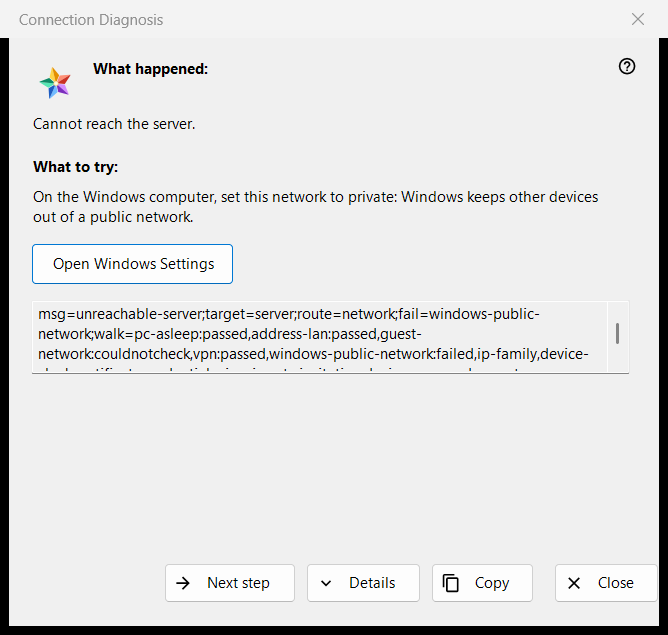

Connection Diagnosis
What this is for
Explains why a server or a device cannot be reached and offers what to try, one step at a time. It changes no setting of the computer or of Windows. It opens from «Why doesn't it connect?..» in the «More» menu of the resources list (for a selected row), from a server entry in «My devices» that is signing in again, shows a changed certificate or cannot connect, and by itself when opening a resource fails.


In this order
- Read «What happened:».
- Try what «What to try:» says.
- If that is not the cause, press «Next step».
- Press «Details» if someone asks for the codes, and «Copy» to hand them over.
- Close the window.
The elements
What happened
One sentence about the failure, for example «Cannot reach the server.», «The login or the password is wrong.» or «This server does not look like the one you connected to before.». It follows the kind of failure that opened the window.
What to try
The window starts at the first step that failed in the check, or at the first step when none did. Typical steps: wake the device that runs the server, check that both devices are on the same network, leave a guest Wi-Fi, turn a VPN off for a moment, set the Windows network to private, check the server from another network, set the right date and time, confirm a new fingerprint, retype the login and the password. The last step says that only the server's operator can fix it.
Next step and Windows Settings
«Next step» moves along the steps and disappears on the last one. For the two steps that Windows settings can fix, the network profile and the clock, an «Open Windows Settings» button opens the matching Windows page; the program changes nothing itself.
Details and Copy
«Details» shows or hides a read-only box with the diagnosis codes: the kind of failure, the target, the route, the failed step and the steps walked. It never holds an address, a login, a password or a fingerprint. «Copy» puts that line on the clipboard and the window says «Diagnosis codes copied to clipboard.»
How the check works
The check runs only for the connection you tried and only reads: it tries to reach the host and port and looks at the network state, VPN adapters, the Windows network profile, the address family, the clock and the certificate. It stops at the first failed step, and a check that could not be made is never counted as passed or failed.